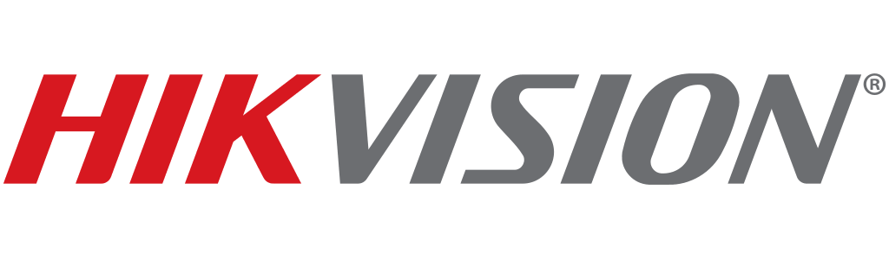

Υπηρεσίες
Συμβουλευτική Κυβερνοασφάλειας & IT
Συνεργάζομαι με επιχειρήσεις και ιδιώτες για τον εντοπισμό αδυναμιών ασφαλείας, την θωράκιση υποδομών και την κατασκευή αξιόπιστων συστημάτων. Με έδρα την Κρήτη, διαθέσιμος εξ αποστάσεως παγκοσμίως.
Τι προσφέρω
Εγκατάσταση Starlink & Διαχείριση ΣύνδεσηςΔωρεαν αυτοψια
Ίντερνετ εκεί που δεν φτάνει η γραμμή. Χωριά, βίλες, εργοτάξια, επιχειρήσεις που δεν αντέχουν να μείνουν εκτός. Πέφτει η κύρια γραμμή, μπαίνει η εφεδρική μόνη της και δεν το καταλαβαίνει κανείς. Από την αυτοψία μέχρι τη διαχείριση μετά, τα αναλαμβάνω όλα.
- Multi-WAN failover (Starlink + 4G/DSL)
- Αυτοψία χώρου & έλεγχος εμποδίων
- Τοποθέτηση & στεγανοποίηση κεραίας
- Ενσωμάτωση router και firewall
- Απομακρυσμένη παρακολούθηση & διαχείριση
Πακέτα Διαχείρισης Δικτύου
Μηνιαία φροντίδα ανά χώρο για καταλύματα, ενοικιαζόμενα και επιχειρήσεις: παρακολούθηση 24/7, backup ρυθμίσεων, ενημερώσεις firmware και ασφάλειας, guest Wi-Fi και έλεγχοι Starlink/failover — ώστε τα προβλήματα να λύνονται πριν τα δει ο πελάτης σας.
- Παρακολούθηση & ειδοποιήσεις 24/7
- Αυτόματα backup ρυθμίσεων
- Ενημερώσεις firmware & ασφάλειας
- Guest Wi-Fi & έλεγχοι failover
- Από €40/μήνα ανά χώρο
Εγκατάσταση Καμερών & CCTV
Κάμερες IP σε σπίτια, βίλες και επιχειρήσεις. Καθαρή εικόνα μέρα και νύχτα, τις βλέπεις από το κινητό σου, και όταν ψάχνεις κάτι το βρίσκεις αμέσως. Τοποθετημένες για να αντέχουν ήλιο, αρμύρα και αέρα.
- Αυτοψία χώρου & τοποθέτηση καμερών
- Εγκατάσταση IP καμερών & NVR (Hikvision)
- Μεταγωγείς PoE & δομημένη καλωδίωση
- Απομονωμένο VLAN καμερών & ασφαλής απομακρυσμένη πρόσβαση
- Σχεδιασμός διατήρησης αρχείου & συντήρηση
Συμβουλευτική IT & Μηχανική Δικτύων
Πρακτική τεχνική καθοδήγηση σε αρχιτεκτονική δικτύων, υποδομές, επιλογή τεχνολογίας και στρατηγική ασφάλειας — από σχεδιασμό δικτύου έως cloud και σχεδιασμό ανθεκτικότητας.
- Μηχανική & σχεδιασμός δικτύων
- Αρχιτεκτονική & υποδομές
- Επιλογή τεχνολογίας
- Στρατηγική ασφάλειας & απόκριση σε περιστατικά
Δοκιμές Διείσδυσης
Προσομοιωμένες επιθέσεις σε εφαρμογές web, δίκτυα και υποδομές για τον εντοπισμό ευπαθειών πριν τις βρουν πραγματικοί επιτιθέμενοι.
- Έλεγχος εφαρμογών web & API
- Pentest δικτύου
- Ασύρματες δοκιμές
- Κοινωνική μηχανική
Πιστοποιήσεις
MTCNA
MikroTik Certified Network Associate
MikroTik Training Center
Θεμελιώδης εμπειρία σε ρυθμίσεις RouterOS, δρομολόγηση, firewalls, ασύρματα δίκτυα, QoS και tunneling σε υποδομές MikroTik.
Εκδόθηκε2026
Ισχύει για3 χρόνια
BSc
Πληροφορική & Τηλεπικοινωνίες
Πανεπιστήμιο Θεσσαλίας
Πανεπιστημιακό πτυχίο με αντικείμενο δίκτυα υπολογιστών, προγραμματισμό, τηλεπικοινωνίες, συστήματα και ασφάλεια — το ακαδημαϊκό υπόβαθρο πίσω από την πρακτική δουλειά.
Διαπιστεύσεις
HackTheBox
Ενεργός παίκτης — Εργαστήρια pentesting
Συνεισφέρων Open Source
Εργαλεία ασφαλείας & έργα αυτοματισμού
Τεχνολογίες
Εξοπλισμός που εγκαθιστώ καθημερινά — vendor-neutral εξ αρχής: το σωστό εργαλείο για τη δουλειά, όχι αυτό με τη συμφωνία λογότυπου.



Ας συνεργαστούμε
Έχετε ένα έργο στο μυαλό ή χρειάζεστε αξιολόγηση ασφαλείας; Επικοινωνήστε για να συζητήσουμε πώς μπορώ να βοηθήσω.